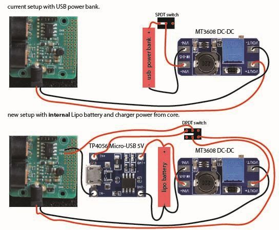

Hi,
For the moment I am powering my axos with a USB battery inside my casing (through step up DC-DC to the barrel connector). It makes the device portable, but I needs to open the cover to load the battery.
For my current build I would like to go a step further using a lipo battery and charger.
I would like:
- to keep the cover closed as much as possible.
- the battery to be charged every time the micro usb is connected. I don't mind that the core is 'on' in order to charge, but that would be a nice extra.
- the battery to power the core when no usb is connected
- being able to switch off the core.
I was wondering whether following system would work.
Is there a problem connecting the outputs of the charger directly to the step up DC-DC module? I can imagine voltage swings during charging. Will this have an effect on the core?

Thanks for the input!
 connect them to the Patcher. That is why I like the battery to be charged from the micro usb power, so I never run out of battery power. This would really be an ideal situation.
connect them to the Patcher. That is why I like the battery to be charged from the micro usb power, so I never run out of battery power. This would really be an ideal situation.{kind=link}
{kind=link}